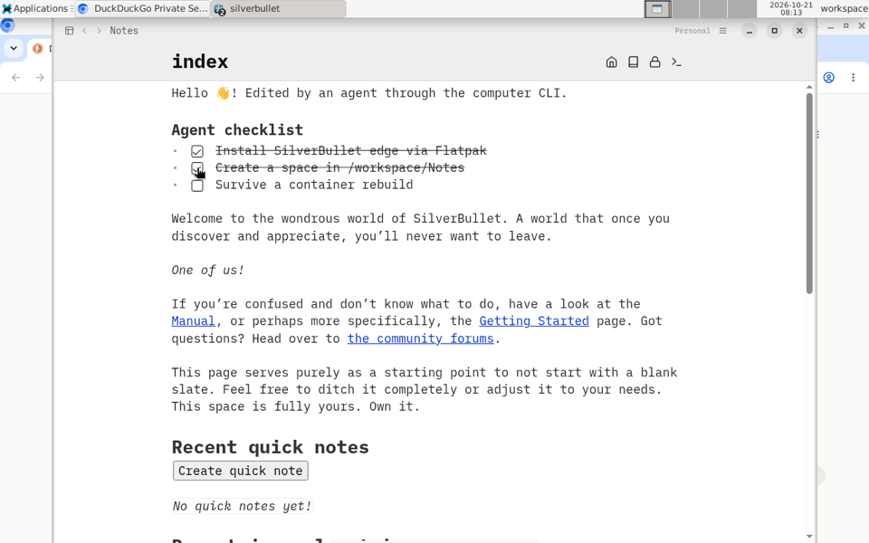

alice
Running for 3 days
Open desktopCPU, last 15 minutes 34%
Memory 1.4 of 2 GB
- Desktop
- /alice/
- Files
- /Users/zef/computers/alice
- Image
- container-computer:latestUpdate available
- Limits
- 2 GB memory, 2 CPUs
- Flatpak apps
- On (no sudo)
- Agent ports
- 127.0.0.1:41022 CDP, 127.0.0.1:41021 VNC
- Created
- 12 October
| PID | User | CPU | Memory | Running for | Command |
|---|
27 processesUpdated every 3 seconds